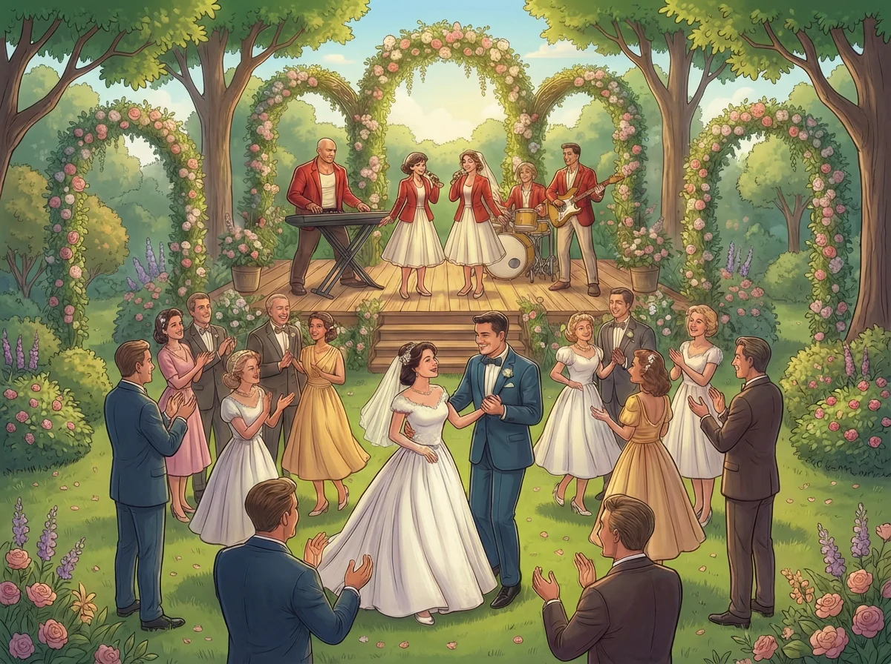

La música en vivo aporta dinamismo y presencia, pero su contratación requiere evaluar aspectos más allá del repertorio. Este artículo detalla los puntos que conviene revisar antes de contratar un grupo musical para bodas, desde lo técnico hasta lo logístico.
En la Ciudad de México, donde la oferta de grupos musicales es amplia, la diferencia entre una contratación exitosa y una problemática radica en la claridad de expectativas y la evaluación objetiva de capacidades técnicas y artísticas.
Aspectos clave antes de contratar
- Alcance del servicio: Definir qué momentos del evento cubrirá el grupo (ceremonia, cóctel, banquete, baile)
- Duración de los sets: Establecer tiempos exactos de presentación y descansos
- Flexibilidad de repertorio: Confirmar capacidad de adaptación a solicitudes especiales
- Coordinación con el cronograma: Sincronización con otros proveedores y momentos clave
Requisitos técnicos habituales
- Espacio mínimo: Dimensiones necesarias para montaje del grupo (varía según número de músicos)
- Electricidad: Requerimientos de voltaje y número de tomas necesarias
- Control de volumen: Capacidad de ajuste según momento del evento y restricciones del venue
- Tiempos de montaje: Horas necesarias para instalación y pruebas de sonido
Un grupo profesional en CDMX debe poder proporcionar especificaciones técnicas detalladas (rider técnico) que faciliten la coordinación con el venue.
La importancia del líder técnico
En grupos versátiles, el líder que combina habilidades de solista y tecladista experto actúa como punto de contacto único para coordinación artística y técnica. Esto simplifica la comunicación durante la planeación y garantiza coherencia en la ejecución del día del evento.
Checklist previo a la contratación
- ☐ Confirmar horarios exactos de inicio y finalización
- ☐ Revisar necesidades técnicas y compatibilidad con el venue
- ☐ Acordar momentos musicales clave (entrada de novios, vals, apertura de pista)
- ☐ Validar condiciones del venue (espacio, electricidad, restricciones de volumen)
- ☐ Solicitar videos de presentaciones reales en eventos similares
- ☐ Verificar disponibilidad de equipo de respaldo
- ☐ Confirmar política de cancelación y contingencias
Errores comunes
- No definir tiempos: Asumir que el grupo "se adaptará" sin especificar horarios exactos
- Asumir que todo está incluido: No clarificar qué equipo técnico proporciona el grupo vs. el venue
- No coordinar con otros proveedores: Falta de comunicación entre grupo musical, DJ (si aplica), coordinador y venue
Preguntas frecuentes
¿La música en vivo reemplaza al DJ?
No necesariamente; pueden coexistir. Muchas bodas en CDMX combinan música en vivo para
momentos protocolarios y DJ para la fase de baile intenso.
¿Cuánto tiempo antes debo contratar?
Para fechas de alta demanda (mayo, diciembre), se recomienda reservar con 3-6 meses de
anticipación.
¿El grupo incluye iluminación?
Depende del paquete. Muchos grupos profesionales integran iluminación básica, pero
producciones mayores requieren cotización adicional.
¿Qué pasa si hay problemas técnicos el día del evento?
Un grupo profesional debe contar con equipo de respaldo y plan de contingencia. Esto
debe quedar especificado en el contrato.
Evaluar estos puntos antes de contratar música en vivo permite evitar ajustes de último momento y garantiza que la música cumpla su rol de complementar cada fase de la boda sin convertirse en fuente de preocupación.
Para asesoría personalizada sobre contratación de música en vivo para bodas en CDMX, contáctanos aquí.